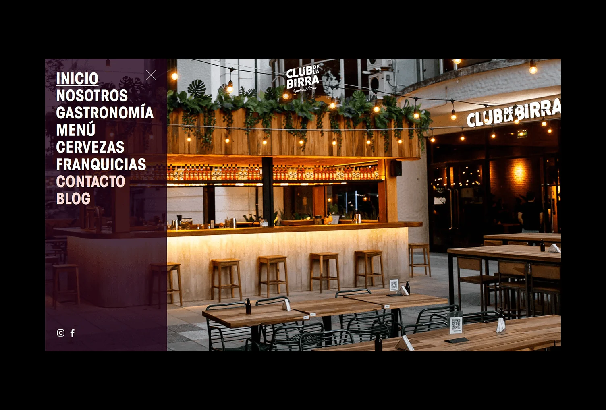
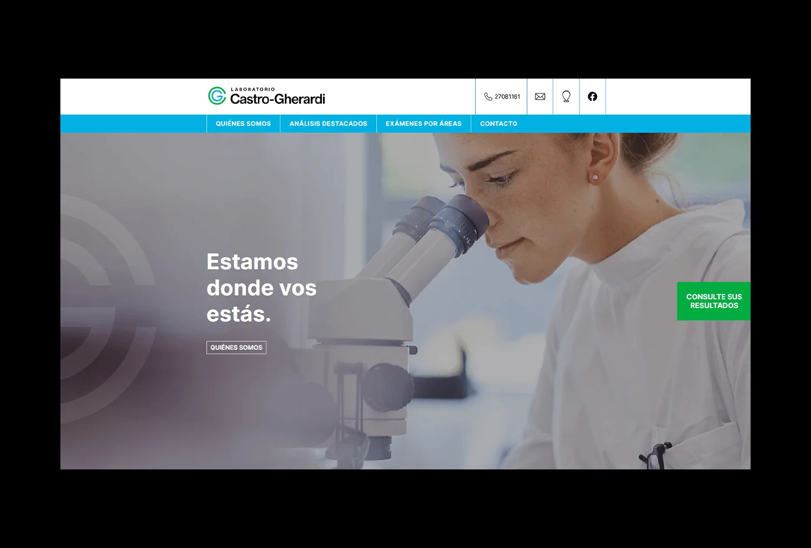
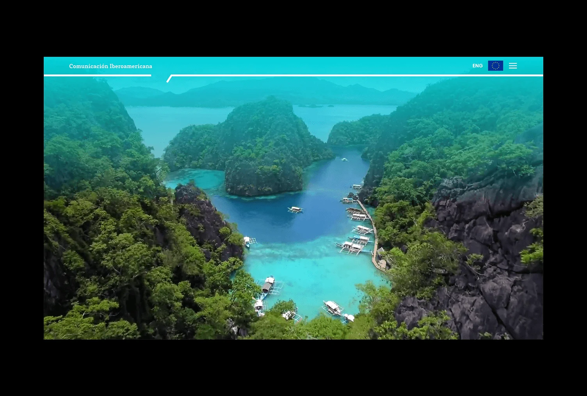
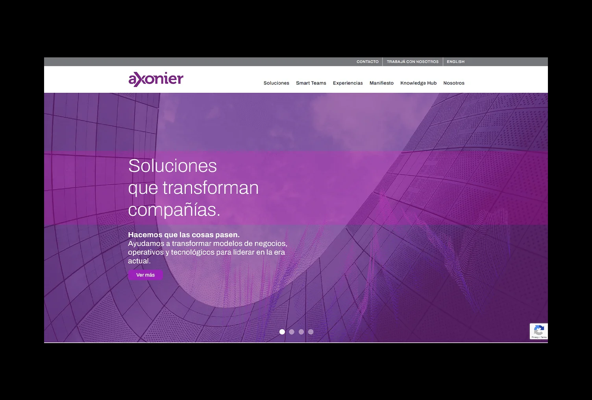
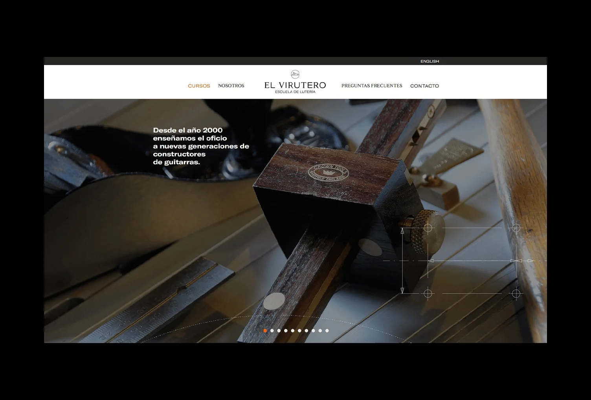

Club de la Birra
Ajustes visuales sobre un sitio existente en WordPress, trabajando con CSS e incorporando imágenes.
Ver sitio de Club de la Birra (abre en otra pestaña)Portfolio personal · Buenos Aires, Argentina
Desarrollador web
Tengo experiencia en implementación y modificación de sitios WordPress, trabajando con código y adaptación responsive. A continuación podrás ver mis trabajos.
Trabajos realizados
Proyectos realizados en colaboración con el estudio de diseño Munda durante 2022–2023. En cada uno detallo mi participación y las tecnologías que utilicé.

Ajustes visuales sobre un sitio existente en WordPress, trabajando con CSS e incorporando imágenes.
Ver sitio de Club de la Birra (abre en otra pestaña)
Desarrollo desde cero a partir del diseño proporcionado por Munda. Convertí la propuesta visual en un sitio funcional y responsive con HTML y CSS, incorporé animaciones con jQuery y lo implementé en WordPress.
Ver sitio de Laboratorio Castro Gherardi (abre en otra pestaña)
Modificaciones sobre un sitio existente en WordPress con HTML y CSS: incorporación de contenidos y apartados, y ajustes en la gestión multidioma mediante un plugin.
Ver sitio de Comunicación Iberoamericana (abre en otra pestaña)
Ajustes sobre un sitio existente en WordPress, trabajando con HTML para implementar las modificaciones solicitadas por el estudio.
Ver sitio de Axonier (abre en otra pestaña)
Modificaciones sobre un sitio existente en WordPress, incluyendo pequeños ajustes puntuales en PHP.
Ver sitio de El Virutero (abre en otra pestaña)Mi recorrido
Colaboré en proyectos que me llegaban a través de un integrante del estudio, implementando modificaciones de maquetación, contenidos y código en sitios WordPress existentes. Para Laboratorio Castro Gherardi desarrollé el sitio desde cero a partir del diseño entregado por Munda, incluyendo su adaptación responsive.
Explorar los proyectosFebrero 2023 – Marzo 2023.
Marzo 2022 – Mayo 2024.
Mayo 2021 – Septiembre 2021.
Diciembre 2020 – Enero 2021.
Hablemos
Para conversar sobre un proyecto o una colaboración, podés escribirme por correo o LinkedIn.
Buenos Aires, Argentina